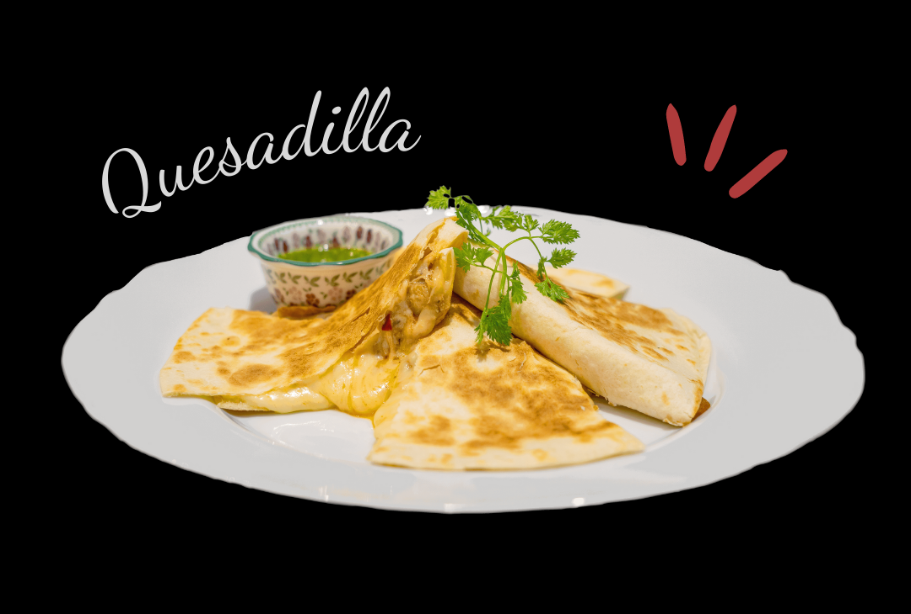
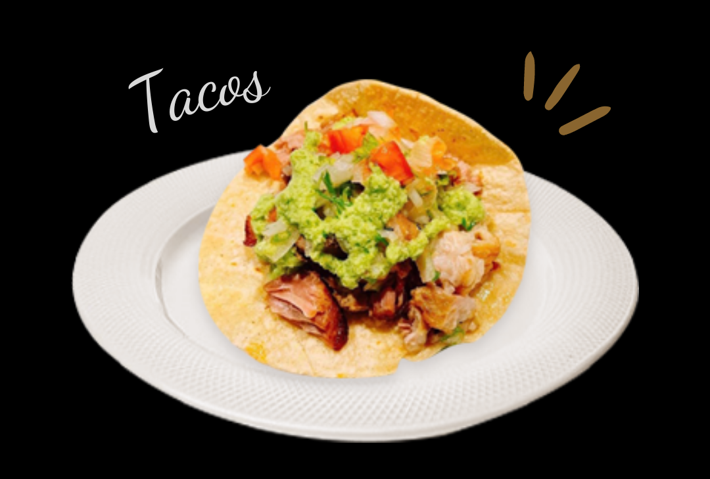
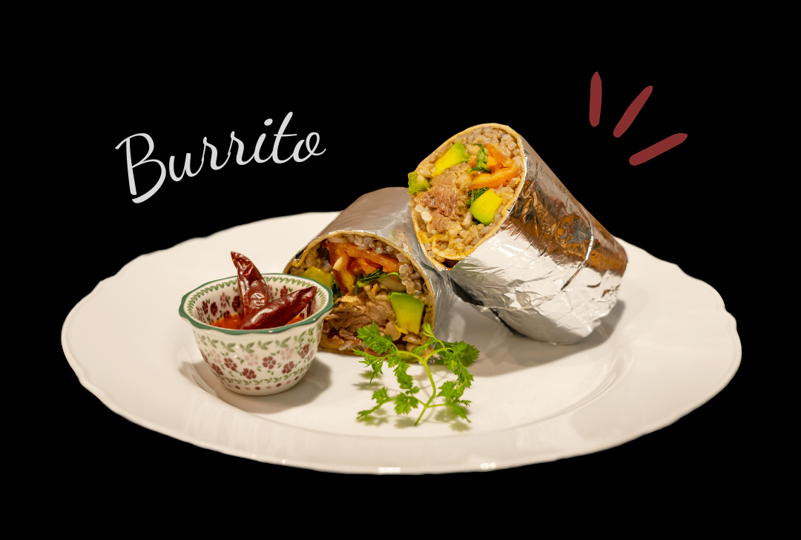

まずは試してもらいたい
- メキシコ料理 -

ケサディーヤ
¥1,100〜
メキシコ料理に馴染みがない方でもまずは試してもらいやすいメニューです。小麦粉で作られたトルティーヤにチーズ（スペイン語でケソ）と具材を挟んで焼いた料理です。

タコス
１つ￥６００〜
とうもろこしで作られたソフトタイプのタコスを使った本格メキシカンタコス。揚げた硬いタイプのタコスはよくアメリカなどで見られますが、メキシコではこの柔らかい手作りタコスを使ったものが主流です。

ブリトー
¥1,150〜
お肉や野菜、ご飯を小麦粉トルティーヤ巻いたボリュームのあるブリトーはお腹すいた時に大満足できる料理です。ホイルに包まれていますので食べやすくテイクアウトでも人気です。